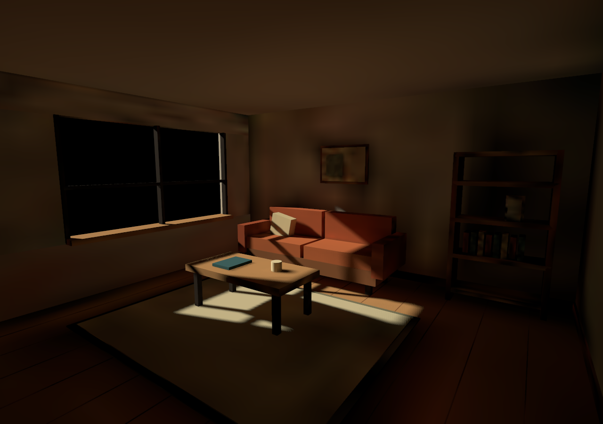

해상도는 낮추고, 얼룩은 지웠습니다.
실내 67개 메시 · 베이크부터 적용까지 70초
라이트맵 210,080 → 69,696픽셀 · 샘플 256 → 32
이전 · 256샘플 / 0.065m빠른 GI · 32샘플 / 0.3m + 디노이즈


벽과 천장의 거친 얼룩은 줄었지만 작은 명암은 부드러워집니다.
화면 해상도는 모두 1280×900입니다. 낮춘 것은 간접광을 저장하는 라이트맵 해상도입니다.
정적 베이크 38.5초 · 디노이즈 16.2초. 이전 실행의 전체 시간은 측정하지 않아 속도 배수는 비교하지 않았습니다.
검증 기록 · 실측값